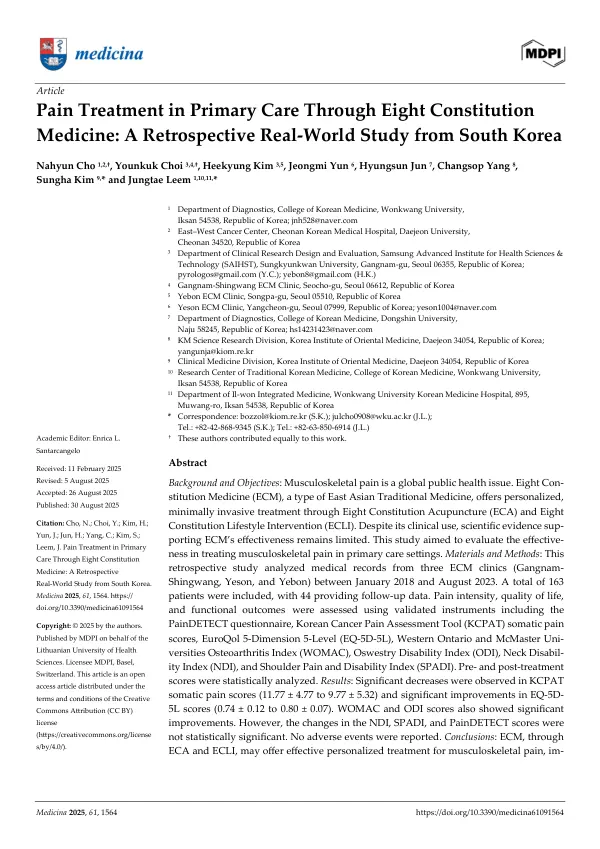

Pain Treatment in Primary Care Through Eight Constitution Medicine: A Retrospective Real-World Study from South Korea
Cho N, Choi Y, Kim H, Yun J, Jun H, Yang C, Kim S, Leem J
Medicina 61(9):1564

첫 장 · 오픈액세스First page · open access
논문 소개Summary
근골격계 통증은 세계에서 가장 흔히 보고되는 의학적 문제입니다. 한국의 유병률은 인구 10만 명당 11,212.7명이고 장애보정생존연수에서 차지하는 몫이 15.3퍼센트로 가장 큽니다. 소염진통제와 아세트아미노펜이 가장 많이 처방되지만 부작용 때문에 장기 복용은 권고되지 않습니다. 한국에서 한의원 일차진료의 40퍼센트가량이 근골격계 문제인데, 그 가운데 8체질의학이 실제로 어떤 결과를 내는지는 밝혀진 바가 거의 없었습니다.
8체질의학은 요골동맥 맥진으로 여덟 체질 가운데 하나로 나눈 뒤 체질에 맞춘 침과 생활 처방을 함께 주는 방식입니다. 생활 처방은 체질마다 다른 식단과 운동, 목욕법을 종이로 건네는 형태입니다. 이 후향적 연구는 서울의 세 8체질 한의원에서 2018년 1월부터 2023년 8월 사이 목·어깨·허리·무릎 통증으로 내원한 163명의 진료기록을 모았습니다. 침은 경력 20년 안팎의 한의사 셋이 한 번에 20분 미만, 주 3회 3개월을 기준으로 시행했습니다.
163명의 평균 나이는 49.9세이고 여성이 72.4퍼센트였습니다. 부위별로는 목 62명, 허리 49명, 무릎과 어깨 각 26명이었고 체질은 췌장기능 항진형이 36명으로 가장 많았습니다. 그러나 치료 전후를 모두 잰 사람은 44명뿐입니다. 그 44명에서 통증 점수는 11.77에서 9.77로 내렸고 삶의 질 지표는 0.74에서 0.80으로 올랐으며, 무릎 지수는 46.13에서 31.50으로, 허리 장애 지수는 155.38에서 122.57로 좋아졌습니다.
좋아지지 않은 것도 그대로 남습니다. 목 장애 지수와 어깨 통증·장애 지수는 유의한 변화가 없었고, 신경병증성 통증을 가려내는 PainDETECT 는 전체에서도 유의하지 않았을 뿐 아니라 무릎·목·어깨에서는 오히려 점수가 올랐습니다. 반응자는 59.0퍼센트였는데, 이들은 기저 삶의 질이 유의하게 낮고 건강보조식품을 더 많이 먹는 사람들이었습니다. 이상반응 보고는 없었습니다.
숫자를 읽을 때 조심할 대목이 있습니다. 163명 가운데 추적이 된 사람이 44명이라 100명 넘게 빠졌고, 추적된 쪽이 나이가 더 많고 허리 장애 지수도 더 높았습니다. 후향 연구라 표본 수를 미리 계산하지 않았고 선택·정보 비뚤림을 배제할 수 없습니다. 침과 생활 처방을 함께 준 설계여서 무엇이 효과를 냈는지도 가릴 수 없습니다. 저자들은 이 결과를 예비 자료로 삼아 전향적 레지스트리를 하겠다고 적었습니다.
Musculoskeletal pain is the most frequently reported medical condition worldwide. Its prevalence in South Korea is 11,212.7 per 100,000, and it accounts for the largest single share — 15.3 percent — of the country's disability-adjusted life years. Non-steroidal anti-inflammatory drugs and acetaminophen are the most prescribed treatments, but their side effects make long-term use inadvisable. Roughly 40 percent of primary-care visits to Korean medicine practitioners concern musculoskeletal problems, yet almost nothing was known about what Eight Constitution Medicine actually achieves within that practice.
Eight Constitution Medicine classifies a patient into one of eight constitutions by radial-artery pulse diagnosis, then delivers constitution-matched acupuncture together with a lifestyle prescription — diet, exercise and bathing recommendations that differ by constitution, handed over on paper. This retrospective study drew the records of 163 patients who attended three Eight Constitution clinics in Seoul between January 2018 and August 2023 for neck, shoulder, back or knee pain. Acupuncture was delivered by three practitioners with about twenty years of clinical experience, using a standard guide tube with a fast-in, fast-out technique, sessions under twenty minutes, nominally three times a week for three months.
The 163 patients averaged 49.9 years and were 72.4 percent women: 62 with neck pain, 49 with low back pain, and 26 each with knee and shoulder pain, the commonest constitution being pancreotonia at 36. Only 44, however, had measurements both before and after. Among those 44, the somatic pain score fell from 11.77 to 9.77 and the EQ-5D-5L index rose from 0.74 to 0.80, while the WOMAC fell from 46.13 to 31.50 and the Oswestry Disability Index from 155.38 to 122.57.
What did not improve stands as well. The Neck Disability Index and the Shoulder Pain and Disability Index showed no significant change, and the PainDETECT questionnaire, which screens for neuropathic pain, was not significant overall and actually rose for knee, neck and shoulder pain. Responders made up 59.0 percent; they had significantly poorer baseline quality of life and took dietary supplements more often. No adverse events were reported.
The figures come with a caution. Follow-up was available for 44 of 163 patients, so more than a hundred dropped out, and those followed up were older and had higher baseline disability scores for low back pain. Being retrospective, the study performed no a priori power calculation and cannot exclude selection or information bias. Because acupuncture and the lifestyle intervention were given together, neither can be credited separately. The authors present these findings as preliminary data for setting effect size, treatment duration and outcome variables, and name a prospective registry as their next step.
인용Cite
Cho N, Choi Y, Kim H, Yun J, Jun H, Yang C, Kim S, Leem J. Pain Treatment in Primary Care Through Eight Constitution Medicine: A Retrospective Real-World Study from South Korea. Medicina. 2025;61(9):1564. doi:10.3390/medicina61091564